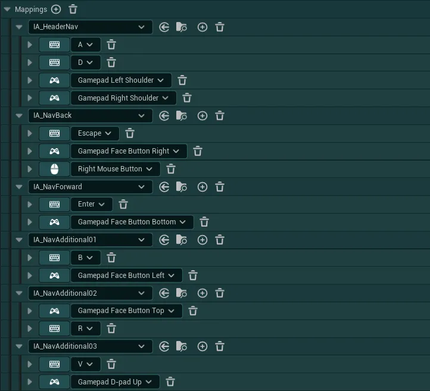
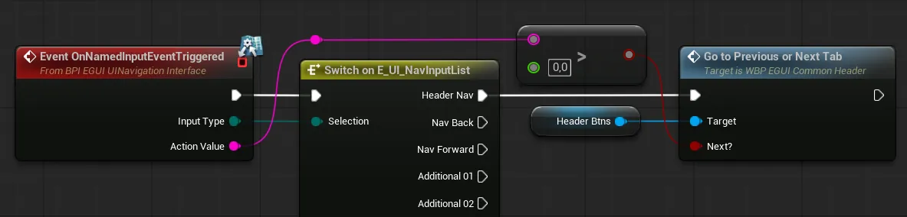

UI 导航系统¶
UI 导航系统旨在提供一个通用框架，通过基于堆栈（Stack）的系统，以无缝的输入路由和可见性状态来管理你的所有 UI
以下章节将概括介绍该系统各部分的工作原理，后面的章节则会涵盖更具体的主题，例如如何设置你的控件，以及一份更全面的如何使用该系统的指南
系统概览¶
UI 导航系统的灵感来源于 Unreal 的 Common UI 等先进方案，它充当一个集中式的“大脑”（由 Game HUD 管理）。其核心理念是把逻辑从控件转移到系统中：控件不再盲目地管理自身的可见性和输入，而是作为系统的一部分被统一处理，从而大幅简化控件的代码，并避免大多数常见的控件输入/可见性冲突。
要正确理解该系统，需要先了解几个核心概念：
-
基于堆栈的分层：系统基于堆栈逻辑，控件会按照可用的层（Game、Menus、Modals、Loading、System）被添加（“压入”）到堆栈中。当新控件被压入堆栈顶部时，系统会读取其所需参数，并相应地更新堆栈中的所有控件（更新焦点、可见性、输入等）
系统还保证在任意时刻只有堆栈最顶部的控件（即“活动控件”）真正处理焦点和输入，这避免了在处理大量复杂控件时出现的多种潜在冲突。
活动控件负责决定堆栈的状态：它可以指示下层控件是否可见、使用哪种输入模式、允许哪些 IMC、聚焦哪个按钮等。所有这些都只需通过几个变量完成，无需硬编码任何控件之间的逻辑。控件的某些参数即使在控件不处于活动状态时，仍可能“渗透”到堆栈底部，例如堆栈中的某个控件要求隐藏其下方所有控件，那么该状态会一直保持，直到该控件被移除，即使它并不在堆栈顶部。不过，控件永远无法决定堆栈中位于其上方控件的状态，它只能影响下方的控件
-
动态焦点路由与回退：系统旨在始终安全地捕获焦点丢失，并持续向活动控件查询其动态更新的“期望焦点目标”，从而确保手柄与键盘/鼠标导航之间的平滑切换。这也意味着，只要活动控件提供了有效的焦点目标，不同控件之间的切换就始终由系统处理，无需任何额外代码。
-
控件生命周期：由系统管理的控件会响应一条可预期的事件链，让你可以在控件之间设置特定的逻辑和交互：
- 控件首先被“添加到堆栈”：此时控件已位于堆栈中，如果其上方的其他控件没有要求遮挡下层，它就可以变为可见
- 如果控件位于堆栈顶部，则它被“激活”：系统会读取其参数并应用到堆栈，该控件获得焦点并掌控系统
- 如果有另一个控件被添加到它上方（例如菜单上方的确认模态框），那么该控件会被“停用”，不再决定堆栈状态，它已将控制权完全移交给堆栈中位置更高的控件。激活与停用可以在控件的生命周期内多次发生
- 当控件不再需要时，可以将其“从堆栈中移除”，这会从系统中清除它的所有参数并将它从屏幕上移除（如有需要，可能会激活另一个下层控件）
在你的控件中设置 UI 导航系统¶
如何操作
UI 导航系统需要对你的控件进行一些设置才能正常工作，为此你有两种方案：
如果你想查看设置过程的示例，可以看看位于 EasyGameUI/DemoContent 文件夹中的 WBP_EasyExampleWidget，该控件已经使用重新指定父类方案完成了整个系统的设置
A. 进行手动实现¶
-
首先打开将要使用该系统的控件，然后进入
Class Settings，在 Details 面板中找到Implemented Interfaces部分 -
点击“Add”，搜索
BPI_EGUI_UINavigationInterface并点击它 -
接着，进入
Functions>Override，重写函数On Mouse Move（如果你已经重写过它，直接打开该函数即可） -
在该函数内部，只需添加
Handle on Mouse Move宏，并将其接入函数，连接好所有相关引脚HUD 引用
你可以使用
Get Easy Game HUD函数连接到 HUD 引脚，但我强烈建议在你的控件中创建一个HudReference变量，并通过Event On Initialized或Event Construct为其赋值这样，你就可以轻松访问 HUD，而不会产生任何潜在的性能影响
-
然后，回到
Functions>Override，重写函数On Preview Key Down（如果你已经重写过它，直接打开该函数即可） -
在该函数内部，只需添加
Handle on Preview Key Down宏，并将其接入函数，连接好所有相关引脚 -
最后，根据你的控件逻辑，你可能需要执行一些额外的设置步骤：
控件移除
使用该系统时需要特别注意的一点是控件移除，你绝对不应该使用
Remove From Parent节点直接移除控件。而应使用 HUD 的
Remove Widget Instance From Stack函数，这样可确保系统正确收到移除通知，并相应地更新堆栈。理想的鼠标设置
为确保尽可能最佳的鼠标行为（在主要使用手柄时），还建议始终让控件中有一个元素在后台阻挡一切。例如，这可以是你主 Canvas Panel，或一个专用背景图片，应将其 Visibility 设置为
Visible -
完成这些之后，你的控件就可以配合系统使用了，请查看下一节以配置它并使用提供的事件


B. 使用提供的父类（重新指定父类）¶
-
要使用提供的父类，首先打开将要使用该系统的控件，然后在窗口右上角确保
Parent Class为引擎默认类User Widget如果是其他类，请回看第一种实现方法
-
然后，进入
Class Settings，在 Details 面板中找到Parent Class变量 -
点击下拉列表，搜索
WBP_EasyMasterWidget类并点击它 -
最后，根据你的控件逻辑，你可能需要执行一些额外的设置步骤：
可能的重写函数
你的控件可能重写了一些系统所需的函数，请查看以下说明，以确保系统仍能正确使用它们
-
如果你在控件中使用了
Event On Initialized，请右键点击它并选择Add Call to Parent Function，然后将新生成的节点接入你的代码之前，如下图所示 -
如果你在控件中使用了
On Preview Key Down和/或On Mouse Move函数，请重复相同的过程
控件移除
使用该系统时需要特别注意的一点是控件移除，你绝对不应该使用
Remove From Parent节点直接移除控件。而应使用父类提供的
Remove This Widget函数，这样可确保系统正确收到移除通知，并相应地更新堆栈。理想的鼠标设置
为确保尽可能最佳的鼠标行为（在主要使用手柄时），还建议始终让控件中有一个元素在后台阻挡一切。例如，这可以是你主 Canvas Panel，或一个专用背景图片，应将其 Visibility 设置为
Visible -
-
完成这些之后，你的控件就可以配合系统使用了，请查看下一节以配置它并使用提供的事件


控件配置¶
控件设置完成后，你现在可以开始用提供的函数进行配置，并实现可选的附加逻辑来响应特定的系统事件，你可以在 Interfaces > Easy Game UI Widgets > UI Navigation 类别下找到这些函数
你会找到 3 组函数：配置函数 / 控件状态事件 / 输入事件

配置函数
配置函数¶
这些配置函数用于告诉系统，当控件位于栈中时应如何处理它。要让控件获得期望的行为，这些是唯一必须设置的"强制"函数
Get Widget Desired Input Config
此函数定义该控件在激活和停用时所需的输入配置。它还提供了注册输入事件的机会

RegisterInputEventsListener若为 True，当通过On Any Key Triggered和On Named Input Event Triggered事件触发按键或命名输入事件时，该控件将收到通知UseDesiredInputConfig若为 True，系统将在该控件激活时应用所提供的输入配置。若为 False，系统将查找备用配置或使用默认输入配置DesiredInputConfig该控件激活时要应用的输入配置RegisterFallbackInputConfig若为 True，系统将注册以下备用输入配置，以便在需要时使用FallbackInputConfigOnRemoval当该控件从栈中移除，且栈中没有其他控件能够提供新的输入配置时要应用的输入配置。仅当 "RegisterFallbackInputConfig" 为 true 时才会考虑此项
Get Widget Desired Focus Target
返回该控件在需要时请求作为焦点的元素（例如按钮）。该目标可以是动态的，因为每次需要将焦点恢复到该控件时都会重新请求

Widget Is Focus Handler若为 True，该控件会通知系统它可以处理焦点，并需要其目标获得焦点Focus Target该控件激活时，系统应用作焦点点的目标
Get Widget Desired Occlusion Rules
返回该控件对输入遮挡以及栈中较低优先级控件遮挡所要求的规则

Widget Is Global Occluder若为 True，该控件将强制隐藏栈中位于其下方的所有控件。即使该控件不是当前活动控件，此规则也会生效。Should Remove Gameplay IMCs若为 True，当该控件位于栈中时，全局配置中所有已注册的 游戏玩法输入映射上下文（Gameplay Input Mapping Contexts） 都将被移除。若栈中没有任何控件的该值为 true，则会将这些 IMC 重新添加到玩家。
控件状态事件
控件状态事件¶
控件状态事件允许你设置在栈中处理该控件时响应系统事件的逻辑
On Widget Added To Stack
当该控件已添加到栈中，但尚未在屏幕上可见且尚未成为焦点处理器时调用的事件。

此事件提供了在该控件完全显示并设置完成之前进行一次性设置的机会。该事件只会触发一次，直到该控件被显式移除并重新添加到栈中
On Widget Activated
当该控件成为新的活动焦点处理器时调用的事件。

当此事件触发时，控件和系统已使用所提供的参数完成完整设置，控件已可使用（它是活动的焦点处理器）
On Widget Deactivated
当该控件不再是栈中活动的最顶层焦点处理器时调用的事件。

如果新的焦点处理器控件已添加到栈顶，或者该控件正从栈中移除，此事件都可能被触发
On Widget Removed From Stack
当该控件完全从栈中移除并需要标记为待删除时调用的事件。如果手动处理移除，请谨慎对待延迟移除，因为如果在控件正从栈中移除时尝试将同一个控件重新添加回栈中，可能会引发问题。

Handled By Widget若为 True，该控件必须自行处理从视口中移除自身的过程（触发此事件后，使用 Remove From Parent 即可），从而有机会播放动画等。若为 False，系统将负责处理，控件中无需执行其他操作。
On Widget New Visibility Requested
当系统要求该控件更改可见性时调用的事件。

Handled By Widget若为 True，该控件必须自行处理可见性更改（当New Visibility为 False 时隐藏 / 为 True 时显示），从而有机会播放动画等。若为 False，系统将负责处理，控件中无需执行其他操作。
输入事件
输入事件¶
输入事件函数允许你设置响应各种输入（任意按键或返回等命名事件）的逻辑
On Named Input Event Triggered
当玩家触发命名事件输入（返回、页眉导航等）时触发的事件

这些事件基于以下按键绑定调用，可在 IMC_EGUI_Navigation 资源中找到

对于 Header Nav 事件，你可以使用 Action Value 引脚获知所请求的导航方向（>0 = 下一个）


UI 导航系统用法¶
设置好控件后，你便可以使用 Easy Game UI HUD > UI System 下的所有 HUD 函数来处理你的控件
你会看到 3 组函数：控件创建与插入栈 / 控件从栈中移除 / 实用函数

控件创建与插入栈
控件创建与插入栈¶
Create Widget From Definition
此函数让你可以轻松创建指定类的控件。它与标准的 Create Widget 函数非常相似，但当 Keep Persistent Instance 设为 True 时，你可以直接受益于系统内置的缓存能力

输出会给你一个标准的 User Widget 对象，如有需要，你可以将其转换为特定类型。
Insert Widget Instance in Stack
此函数允许你将现有的控件实例添加到栈中指定层的顶部。

这可以与 Create Widget From Definition 结合使用：先创建控件，再向其传递一些数据，最后将其插入到所需的层中的栈里
调用此函数后，控件将被创建，并收到 On Widget Added To Stack 事件。如果该控件是栈中新的最顶层控件，则会在其上调用 On Widget Activated，同时之前的焦点处理器将收到 On Widget Deactivated 事件。
Add Widget of Class to Stack
此函数允许你创建一个控件并将其直接插入到指定层的顶部（结合了前面两个函数）

调用此函数后，控件将被创建，并收到 On Widget Added To Stack 事件。如果该控件是栈中新的最顶层控件，则会在其上调用 On Widget Activated，同时之前的焦点处理器将收到 On Widget Deactivated 事件。
输出会给你一个标准的 User Widget 对象，如有需要，你可以将其转换为特定类型。
控件从栈中移除
从堆栈中移除控件¶
Remove Widget Instance from Stack
调用此函数时，系统会将传入的控件引用从堆栈中移除（如果存在）。

调用此函数后，该控件会收到 On Widget Removed From Stack 事件。如果该控件是位于最顶层的焦点处理者，它还会收到 On Widget Deactivated，并且可能有新的控件成为焦点处理者。
Remove Widget Class from Stack
调用此函数时，系统会从堆栈中移除与传入的控件类匹配的第一个控件（如果存在）。

调用此函数后，该控件会收到 On Widget Removed From Stack 事件。如果该控件是位于最顶层的焦点处理者，它还会收到 On Widget Deactivated，并且可能有新的控件成为焦点处理者。
Remove All Widgets from Layer
调用此函数时，指定层中的所有控件都会被移除（如果 Clear All Layers? 为 True，则整个堆栈中的所有控件都会被移除）。

调用此函数后，控件会从顶层到底层依次被移除，并且都会收到 On Widget Removed From Stack 事件。在移除过程中，随着焦点处理沿堆栈向下传递，多个控件可能会收到 On Widget Deactivated 和 On Widget Activated（如果位于最顶层的焦点处理者属于被清除的层）。
工具函数
工具函数¶
Refresh Focus Target for Active Widget
调用此函数时，焦点会在当前焦点处理者上刷新，例如当你希望在控件内的各个目标之间跳转时，这会很有用。

调用此函数后，该控件会收到 Get Widget Desired Focus Target 事件，从而可以提供更新后的焦点值。